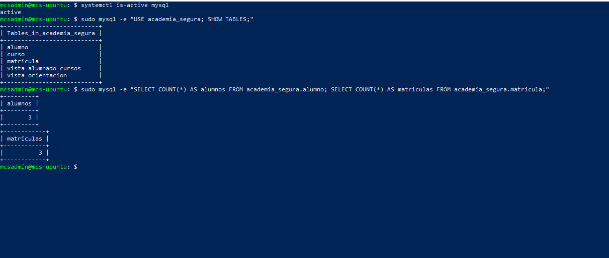
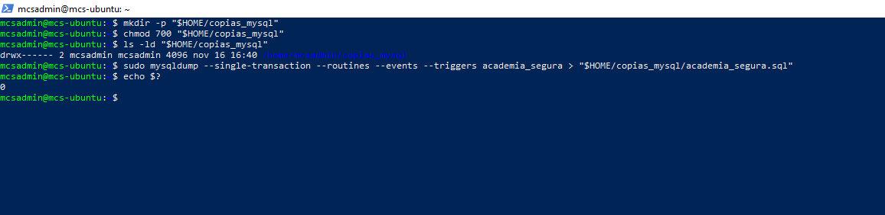
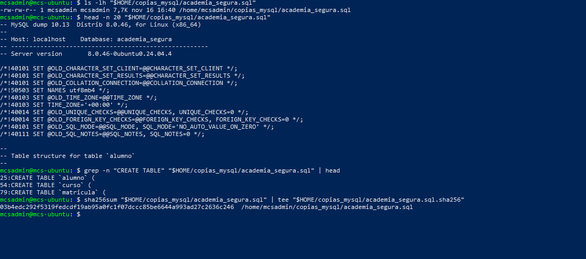
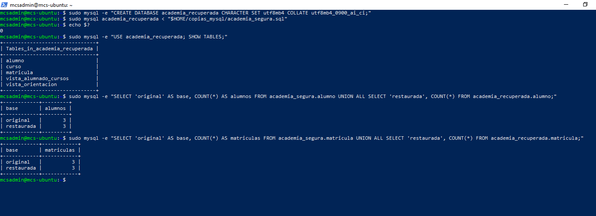
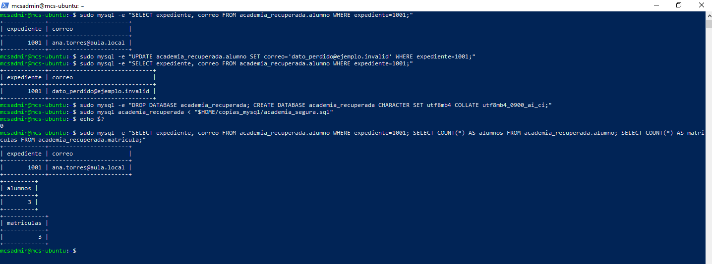
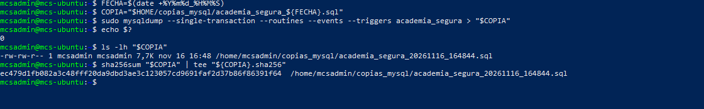
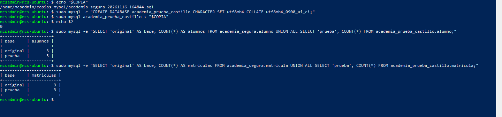
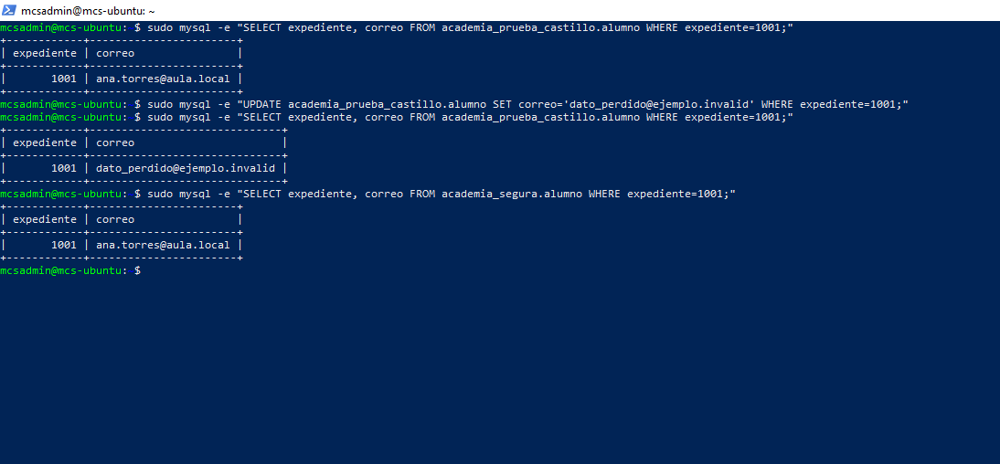
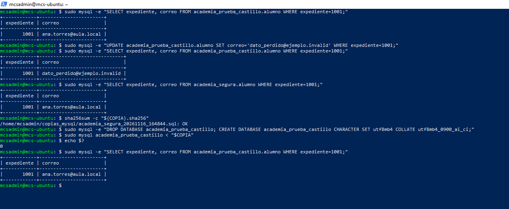
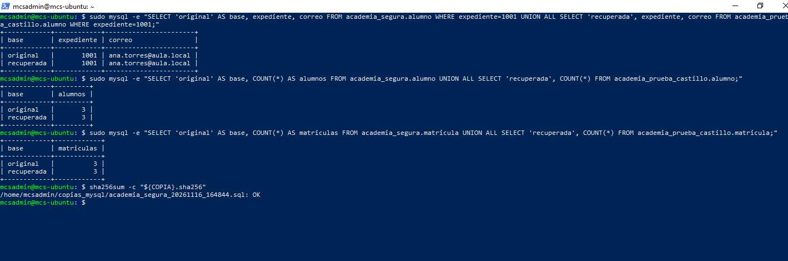

COPIAR.
RECUPERAR.
Copias de seguridad y recuperación en MySQL
Crear una copia lógica, verificarla y demostrar una restauración real.
Entorno y objetivo
Se utiliza academia_segura, creada en la actividad 4. Esta tarea puede realizarse antes de la actividad 5 porque no depende del acceso remoto. Se conservará intacta la base original. Las incidencias se limitarán a bases de laboratorio, después de verificar la copia.
La plantilla se completará con los comandos y resultados reales durante el trabajo paso a paso. Tiempo real de realización: de 17:21 a 17:57, un total de 36 minutos, según el horario indicado por el alumno.
Estado inicial y recuentos
Comprobar MySQL y academia_segura. Anotar los recuentos de alumno y matricula antes de copiar.
systemctl is-active mysql
sudo mysql -e "USE academia_segura; SHOW TABLES;"
sudo mysql -e "SELECT COUNT(*) AS alumnos FROM academia_segura.alumno; SELECT COUNT(*) AS matriculas FROM academia_segura.matricula;"
media/a06-01-estado-recuentos.PNGResultado: pendiente.
Carpeta protegida y copia lógica
Crear copias_mysql con permisos 700. Ejecutar mysqldump con single-transaction, routines, events y triggers; consultar inmediatamente su código de salida.

media/a06-02-carpeta-copia.PNGResultado: pendiente.
Verificación del archivo
Comprobar tamaño, cabecera, CREATE TABLE e INSERT INTO, y calcular SHA-256.

media/a06-03-verificacion-copia.PNGResultado: pendiente.
Restauración en academia_recuperada
Crear una base distinta, importar y comparar tablas y recuentos. No sobrescribir academia_segura.

media/a06-04-restauracion-inicial.PNGResultado: pendiente.
Incidencia y recuperación guiada
Modificar el correo de expediente 1001 únicamente en academia_recuperada; mostrar el cambio y recuperar desde la copia. Verificar el correo original y los recuentos.

media/a06-05-incidencia-recuperacion.PNGResultado: pendiente.
Actividad final: copia con fecha y hora
Generar una copia nueva de academia_segura con fecha y hora en el nombre, comprobar el código de salida y registrar tamaño y SHA-256.

media/a06-06-copia-fechada.PNGResultado: pendiente.
Actividad final: restauración independiente
Restaurar en academia_prueba_castillo y comparar al menos dos recuentos con academia_segura.

media/a06-07-restauracion-prueba.PNGResultado: pendiente.
Actividad final: modificación controlada
Mostrar el correo original y modificarlo únicamente en academia_prueba_castillo; comprobar el cambio.

media/a06-08-perdida-controlada.PNGResultado: pendiente.
Actividad final: nueva restauración
Recrear exclusivamente la base de prueba e importar la copia fechada. Conservar academia_segura intacta.

media/a06-09-recuperacion-final.PNGResultado: pendiente.
Actividad final: verificación
Comprobar el correo recuperado, dos recuentos y la huella del archivo. Explicar que los cambios posteriores a la copia no se recuperan con ella.

media/a06-10-verificacion-final.PNGResultado: pendiente.
EXAM MODE
| Concepto | Qué recordar |
|---|---|
| Copia lógica | mysqldump exporta instrucciones SQL para reconstruir objetos y datos; no copia los archivos físicos internos. |
| Restauración y recuperación | Restaurar es cargar la copia; recuperar incluye volver a un estado válido y comprobarlo. |
| single-transaction | Proporciona consistencia para datos InnoDB; evitar cambios de estructura durante la copia. |
| Rutinas, eventos y disparadores | Las opciones routines, events y triggers documentan los objetos que debe incluir la exportación. |
| Permisos 700 | Solo el propietario puede acceder al directorio. Los permisos Linux son distintos de los privilegios SQL. |
| SHA-256 | Permite comparar la integridad del archivo con una huella de referencia. No demuestra por sí sola que la restauración funcione. |
| RPO | Pérdida de datos máxima aceptable, expresada en tiempo. |
| RTO | Tiempo máximo previsto para recuperar el servicio. |
| Verificación | Comprobar el código de salida, los objetos y los datos restaurados. Los recuentos ayudan, pero no detectan todos los cambios de contenido. |
| Cambios posteriores | Una copia completa devuelve el estado guardado. Para recuperar cambios posteriores puede ser necesario disponer de registros binarios y una estrategia adecuada. |
Actividad final y entrega
La entrega requiere la actividad final con capturas de comandos y salidas: copia fechada, tamaño y huella, restauración en academia_prueba_castillo, comparación de al menos dos recuentos, modificación controlada y recuperación. El nombre indicado para el informe es ASGBD_T2_Tutorial3_Apellidos_Nombre.pdf.
Ajuste al esquema real
La tabla alumno se identifica mediante expediente. Se utilizará expediente = 1001 en las verificaciones, corrigiendo la referencia a id_alumno que aparece en el documento.
Conservación
Conservar academia_segura y los archivos de copia. La limpieza de bases de laboratorio se realizará únicamente cuando corresponda tras revisar las evidencias.
Repaso: ¿por qué echo $? devuelve 0?
Cuando un comando termina, devuelve a la terminal un código de salida. $? contiene el código del último comando ejecutado y echo $? lo muestra. No representa el número de registros ni el porcentaje de progreso.
| Código | Significado habitual |
|---|---|
| 0 | El comando terminó correctamente según sus propias comprobaciones. |
| 1–255 | Un valor distinto de cero indica un error o una condición especial. El significado exacto depende del programa; hay que leer el mensaje que lo acompaña. |
| 1 o 2 | Muchos programas los emplean para errores generales o problemas de uso, pero no tienen un significado universal. En grep, por ejemplo, 1 indica que no encontró coincidencias. |
| 126 | La shell encontró el comando, pero no pudo ejecutarlo. |
| 127 | La shell no encontró el comando. |
| 130 | Habitualmente, el comando se interrumpió con Ctrl+C (señal SIGINT). |
Aplicación en esta práctica
sudo mysql academia_prueba_castillo < "$COPIA"
echo $?El resultado 0 indica que la importación terminó sin errores comunicados por el comando. Por eso lo obtuvimos en las comprobaciones correctas. Si apareciera otro valor, leeríamos el error y no consideraríamos válida la restauración hasta resolverlo.
Un 0 no garantiza por sí solo que se haya usado la base o la copia deseada. También comprobamos el correo, los recuentos y los objetos restaurados. La huella SHA-256 comprueba la integridad del archivo frente a la referencia guardada.
Debe consultarse inmediatamente
sudo mysql academia_prueba_castillo < "$COPIA"
ls
echo $?En este segundo ejemplo, echo $? mostraría el resultado de ls, no el de la importación. Por eso, durante la práctica se ejecuta justo después del comando que queremos comprobar.